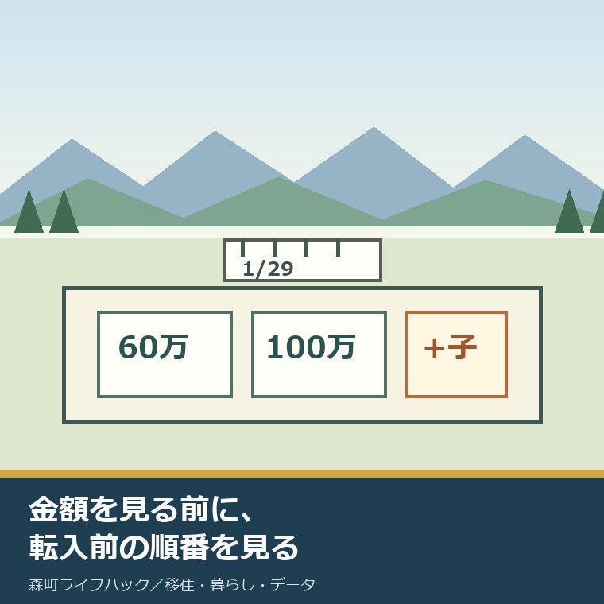
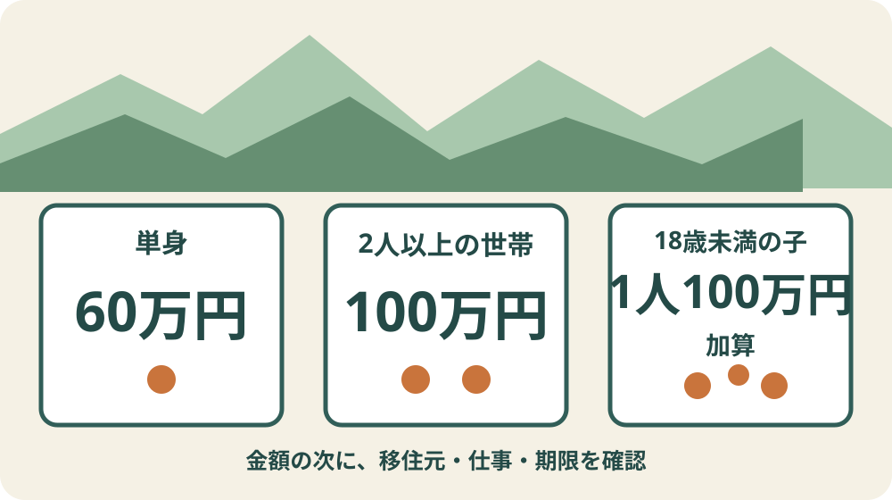
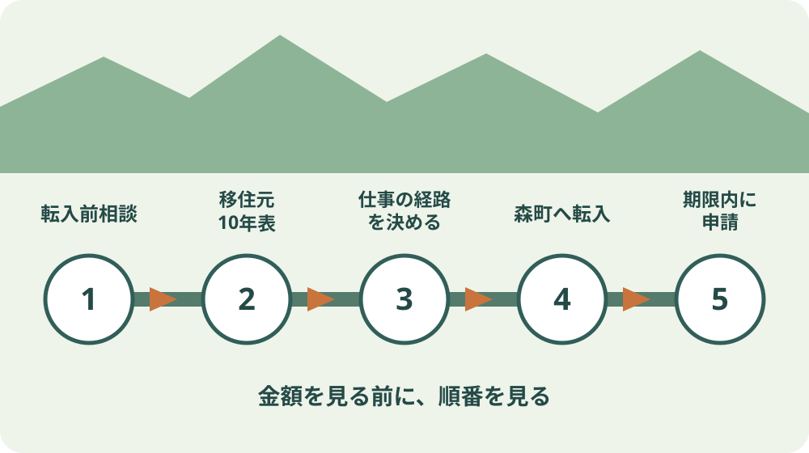

森町の移住・就業支援補助金｜2026年度の条件

この記事の要点
Q. 森町の移住・就業支援補助金は、いくらで、いつ動けばよいですか。
A. 2026年度は単身60万円、2人以上の世帯100万円で、18歳未満の子1人につき100万円が加算されます。ただし県外から移るだけでは対象になりません。東京圏での居住・通勤歴と、就業などの経路を確かめ、転入前に森町へ相談します。年度の申請期限は2027年1月29日です。
静岡県外から森町へ転職して移る家族にとって、引っ越し代、敷金、家電、車の追加は一度に来ます。
そこで目に入るのが、森町の移住・就業支援補助金です。名前だけを見ると、県外就職と転入をすれば使えるようにも読めます。
実際は、移住元、期間、仕事の経路、世帯、申請時期、継続居住の条件が重なります。
この記事は2026年9月6日に、静岡県の2026年度当初予算資料、県の制度案内、2026年度担当課名簿、森町の公式案内を照合して書いています。
体験ストックには、私自身や相談者がこの補助金を受けた記録がありません。受給した、窓口で説明を受けたとは書きません。
私の意見は明確です。補助金は、引っ越してから知っても遅い。最初に金額を見るより、転入前に相談する順番を見る。
町の人も、相談受付、書類確認、予算確保、転入後の確認という手間を負っています。使う側も、後から帳尻を合わせず、入口で条件をそろえる必要があります。
2026年度は単身60万円、世帯100万円、子1人100万円加算
2026年度に確認できる支給額は、単身で60万円、申請者を含む2人以上の世帯で100万円です。
18歳未満の世帯員を帯同して森町へ移住する場合は、子ども1人につき100万円が加算されます。
夫婦と18歳未満の子ども2人なら、世帯100万円に200万円を加え、計300万円です。これは条件を満たした場合の計算であり、全世帯に自動で支給される額ではありません。
意外なのは、子ども2人の加算額200万円が、世帯の基本額100万円を上回ることです。2026年度は子育て世帯への加算の比重が大きくなっています。
支援金は2026年度の予算の範囲内で支給されます。条件を満たせば年度末まで必ず残っている、という案内ではありません。
県の2026年度当初予算資料では、「移住・定住促進事業費」4億3,480万円の内数として移住・就業支援金が位置づけられています。
財源負担は国2分の1、県4分の1、市町4分の1です。森町だけで全額を用意する給付ではありません。
金額は家計の助けになります。ただし、受給を住宅購入の頭金として先に確定させるのは危険です。審査、予算、支給時期を確認してから資金表に入れます。

県外から移るだけでは足りない
移住元の基本条件は、東京23区内に住んでいた人、または東京圏の条件不利地域以外に住み、東京23区へ通勤していた人です。
東京圏は東京都、埼玉県、千葉県、神奈川県です。ただし通勤元には条件不利地域の扱いがあるため、都県名だけで判断しません。
期間は、森町へ移る直前10年間のうち通算5年以上、かつ移住直前に連続1年以上です。
「東京に5年いた」という記憶だけでは足りません。住所の期間と23区への通勤期間を、年月で分けて書き出します。
転職の空白、大学在学中の通学、法人経営者や個人事業主の通勤などには扱いがあります。自分で一般化せず、住所と勤務の資料を見せて確認します。
世帯で申請する場合は、移住前と申請時の双方で、申請者を含む2人以上が同じ世帯に属していることが求められます。
世帯員全員が移住後1年以内であること、過去10年以内に同じ支援金を世帯員として受けていないことなどの共通条件もあります。
申請者には、移住直前の自治体で直近1年の市区町村税に滞納がないことも求められます。納税確認を引っ越し直前まで残さない方がよい項目です。
仕事の入口は五つある
仕事側の要件は一つではありません。一般就業、専門人材、起業、テレワーク、関係人口という経路があります。
一般就業は、静岡県などのマッチングサイトに対象求人として掲載された後に応募し、就職する経路です。
勤務地は東京圏外、または東京圏内の条件不利地域です。週20時間以上の無期雇用で、申請時に在職していることが求められます。
転勤、出向、出張、研修による勤務地変更ではなく、新規雇用であることも条件です。原則として、3親等以内の親族が就業先の経営者である場合は対象になりません。
専門人材は、プロフェッショナル人材事業または先導的人材マッチング事業を利用した就業です。一般就業と同じく、無期雇用、申請時在職、5年以上働く意思などを確かめます。
起業は、静岡県の地域創生起業支援事業における起業支援金の交付決定を、移住支援金の申請時点から1年以内に受けていることが入口です。
テレワークは、会社命令ではなく自分の意思で移住し、森町を生活の本拠として、移住元の仕事を続ける経路です。原則として恒常的に通勤せず、週20時間以上テレワークする条件があります。
関係人口は、市町ごとに要件が異なります。県の案内からたどれる一覧は2025年度版で、森町の2026年度版とは確認できませんでした。
過去年度の森町欄を、そのまま2026年度の条件として使いません。森町に以前住んだ、交流会へ参加したという人も、現年度の要件を窓口へ尋ねます。
| 経路 | 2026年度に先に確認すること | 見落としやすい点 |
|---|---|---|
| 一般就業 | 求人が対象として掲載された後に応募したか | 週20時間以上の無期雇用、新規雇用 |
| 専門人材 | 対象の人材事業を利用したか | 離職を前提とする雇用ではないか |
| 起業 | 対象の起業支援金の交付決定日 | 申請時点から1年以内か |
| テレワーク | 本人の意思による移住か | 森町が生活本拠、週20時間以上か |
| 関係人口 | 森町の2026年度要件 | 現行一覧を窓口で確認する |
良い点：仕事を一つの形に決めつけていない
良い点は、対象を県内企業への一般就職だけに狭めていないことです。
専門性を持つ転職者、地域で起業する人、今の勤務先を変えずにテレワークする人にも入口があります。
18歳未満の子どもへの加算は、転居で増える学用品、家具、送迎車両などの負担を受け止める大きさです。
森町で人を雇う事業者にも、対象法人として求人を登録する入口があります。人手不足と移住を別々に扱わない仕組みです。
町内事業者が求人を登録するには、官民共同のマッチングサイトへ掲載するための法人登録が必要です。森町公式は産業課商工観光係を窓口として案内しています。
森町の移住コーディネーターを整理した記事では、物件より前に生活条件を相談する順番を書きました。就業支援金も同じで、求人応募より前の確認が結果を分けます。
注文したい点：町の現行様式と関係人口要件を一か所に
その上で、森町の公式案内には注文があります。2026年度の申請者向け要件、様式、関係人口要件、併給できない補助を一か所で確認できるページが見つかりません。
町公式で開けるのは、主に事業者向けの法人登録案内です。申請者が自分の経路を判定するには、県ページと担当課名簿を行き来します。
既存の町資料から参照されていた過去の交付要綱PDFは、2026年9月6日の確認では404でした。過去の条件を現年度へ移して読むことはできません。
2026年度の森町固有の関係人口要件も、公開資料から確定できませんでした。ここは曖昧なまま丸を付けず、窓口で確認する項目です。
制度に携わる町職員と事業者は、年度ごとの更新と相談対応をすでに担っています。だからこそ、申請者が同じ質問を繰り返さなくてよい一枚の案内が要ります。
担い手が限られる町で、説明を人の記憶だけに預けると続きません。要件、期限、様式、連絡先、更新日を同じ画面に置いてほしいと思います。
私は、分からない項目を「たぶん対象」で進めるより、転入前に一度止める方がよいと言い切ります。

申請は転入前の相談から始める
一段目は、転入前に森町役場定住推進課移住交流係へ相談することです。住所歴、通勤歴、選ぶ仕事の経路、世帯構成、転入予定日を伝えます。
二段目は、移住元の記録を集めることです。住民票の除票、戸籍の附票、在勤証明など、どの資料が必要かを窓口に確認します。
三段目は、仕事の経路を決めることです。一般就業なら、求人が対象として掲載された時点と、自分が応募した時点の前後を確かめます。
四段目で森町へ転入します。森町への転入届はオンライン予約だけで終わらない記事も使い、住民異動とほかの手続きを分けて準備します。
五段目で、就業と居住の条件をそろえて申請します。原則は移住後1年以内ですが、2026年度の森町の申請期限は2027年1月29日です。
2027年1月末に転入すれば1年ある、と考えてはいけません。年度期限と予算が先に来るため、転入予定日が遅い人ほど事前確認が必要です。
窓口は森町役場定住推進課移住交流係、住所は森町森2101-1、電話は0538-85-6321、メールはteijyu@town.shizuoka-mori.lg.jpです。
返還条件を受給前に家族で読む
支援金は受け取って終わりではありません。申請日から5年以上、森町に住み続ける意思が要件です。
虚偽の申請をした場合、申請日から3年未満で森町外へ転出した場合は、全額返還です。
申請日から3年以上5年以内に転出した場合は、半額返還です。
就業の経路で申請し、申請日から1年以内にその仕事を辞めた場合は、原則として全額返還です。
起業支援金の交付決定を取り消された場合も、全額返還の対象です。
転職後の仕事が合わない、親の介護で戻る、家族が別居する可能性は、申請時点では読めないことがあります。
やむを得ない事情の扱いを自分で判断せず、退職や転出を決める前に町へ相談します。返還の可能性を家計表の欄として残しておきます。
森町の町営住宅6団地121戸を整理した記事は、住宅取得を急がず住まいの選択肢を比べる材料になります。
対案・結論：今日、移住元10年表を一枚作る
森町の移住・就業支援補助金は、単身60万円、世帯100万円、18歳未満の子1人につき100万円加算です。ただし金額から入ると、東京圏の居住・通勤歴や求人応募の順序を落とします。
今日できる小さな一歩は、直近10年の住所と勤務先を、年月で左右に並べた「移住元10年表」を一枚作ることです。家族分の住所、23区への通勤、転職、休職も空欄にせず書きます。
その表と、世帯構成、転入予定日、予定する仕事の経路を持って、転入前に定住推進課移住交流係へ相談します。2026年度の期限は2027年1月29日ですが、予算が残る保証はありません。
補助金は移住の目的ではなく、条件が合う家族の初期負担を減らす手段です。対象外でも移住が失敗とは限りません。対象かどうかを早く確かめ、使えない金額を家計から外すことも前進です。
家族に残す記録：証拠と判断を分ける
一枚目には、住所、期間、勤務先、勤務地、通勤先を年月で書きます。記憶だけでなく、公的書類や会社の証明で裏づける欄を設けます。
二枚目には、就業、専門人材、起業、テレワーク、関係人口のどの経路で相談したかを書きます。
三枚目には、相談日、窓口、担当者、必要書類、申請予定日、2027年1月29日の期限、未確認事項を書きます。
町の別の補助を使う場合は、併給できるかを質問欄へ入れます。森町の結婚新生活支援補助金の記事で、受付開始日と締切を別に見たのと同じ考え方です。
家族が暮らす地区と通勤方法も記録します。TENCOMORIを読む前に三つの条件を決める記事を使い、仕事、子育て、住まいの優先順位をそろえます。
申請書の控え、添付書類、提出日、受領連絡は一つのフォルダーにまとめます。個人番号や税情報を家族共有のチャットへそのまま載せないことも決めます。
大石の視点：もらえる額より、外す額を先に決める
大石浩之（磐田市／不動産業）として、子ども1人100万円の加算は、子育て世帯の初期費用に効くと考えます。
一方で、不動産の資金計画へ支給前の補助金を満額で入れると、対象外、予算終了、支給時期のずれが住宅契約へ響きます。
私には受給の体験がありません。ここからは制度の事実ではなく、資金計画を作る側としての意見です。
正直に言えば、夫婦と子ども2人で計300万円という計算を見ると、私は先に住宅予算へ入れてよいのではないかと一瞬迷います。
それでも、未確認の300万円を外した表と、受給できた場合の表を二つ作る方がよい。大きい金額ほど、確定前には当てにしません。
最初の資金表は、補助金を0円にして組む。対象確認と申請の見通しが立った後に、別欄へ加える。それが安全です。
原則1の「分からないことは確認する」を使うなら、町の2026年度関係人口要件と申請様式を、古い資料で埋めないことが中心になります。
移住者を迎える側にも、求人登録、書類確認、地域の案内という負担があります。制度を長く使うために、申請者は期限ぎりぎりの持ち込みを避けます。
移住後の暮らしには、仕事を続ける人、子どもの送迎を担う人、空き家を維持する人が要ります。補助金だけで担い手、移動、維持費、後継の課題は消えません。
だから、受給額と同じ紙に、通勤時間、車の費用、住まいの修繕、5年間の家族計画を書きます。
まとめ：転入前に対象経路を一つ選ぶ
2026年度の森町の移住・就業支援補助金は、単身60万円、世帯100万円、18歳未満の子1人につき100万円加算です。
県外移住だけでは足りず、東京圏での居住・23区への通勤について、直前10年で通算5年以上かつ直前に連続1年以上という条件があります。
仕事の経路は一般就業、専門人材、起業、テレワーク、関係人口です。関係人口の森町2026年度要件は公開資料で確定できませんでした。
申請は原則移住後1年以内で、2026年度の森町の期限は2027年1月29日です。転入前に移住元10年表を作り、町へ相談します。
よくある質問
Q1. 森町の移住・就業支援補助金はいくらですか。
A1. 2026年度に確認できる額は、単身60万円、2人以上の世帯100万円です。18歳未満の世帯員を帯同して移住する場合は1人につき100万円が加算されます。予算の範囲内で支給されるため、転入前に森町役場定住推進課移住交流係へ相談してください。
Q2. 静岡県外から森町へ移れば誰でも対象ですか。
A2. 県外からの移住だけでは足りません。東京23区内に住んでいた人、または東京圏の条件不利地域以外に住み東京23区へ通勤していた人について、移住直前10年間で通算5年以上かつ直前に連続1年以上という移住元要件があります。就業、専門人材、起業、テレワーク、関係人口のいずれかの要件も満たす必要があります。
Q3. 2026年度はいつまでに申請しますか。
A3. 原則として移住後1年以内で、2026年度の森町の申請期限は2027年1月29日です。予算の範囲内での支給で、町固有の様式や関係人口要件は2026年9月6日に現行版を確認できなかったため、転入日や就職日を決める前に定住推進課移住交流係へ確認します。
参考にした公式情報
- 2026年度当初予算案主要事業／静岡県（掲載元は2026年2月10日更新。移住・定住促進事業費と子ども加算を2026年9月6日に確認）
- 静岡県移住・就業支援金制度／静岡県（移住元、就業などの経路、世帯、返還条件を2026年9月6日に確認）
- 2026年度 静岡県移住・就業支援金 担当課名簿／静岡県（2026年4月1日現在。森町の窓口と申請期限を確認）
- 移住・就業支援補助金に係る法人登録案内／静岡県森町（2025年8月22日更新。町内事業者の求人登録窓口を2026年9月6日に確認）
- 移住定住手続き／静岡県森町（2022年4月1日更新。移住準備の順番を2026年9月6日に確認）

磐田市で小さな不動産業を営みながら、森町の空き家・農地・実家じまいの相談を受けています。地域と不動産実務をつなぐ目線で確認の順番を書きます。
最終確認日：2026-09-06 ／ 金額、対象要件、申請期限、予算、必要書類は年度途中でも変わることがあります。森町固有の2026年度関係人口要件と申請様式は公開資料で確認できていません。転入、求人応募、退職、転出を決める前に森町役場定住推進課移住交流係へ確認してください。